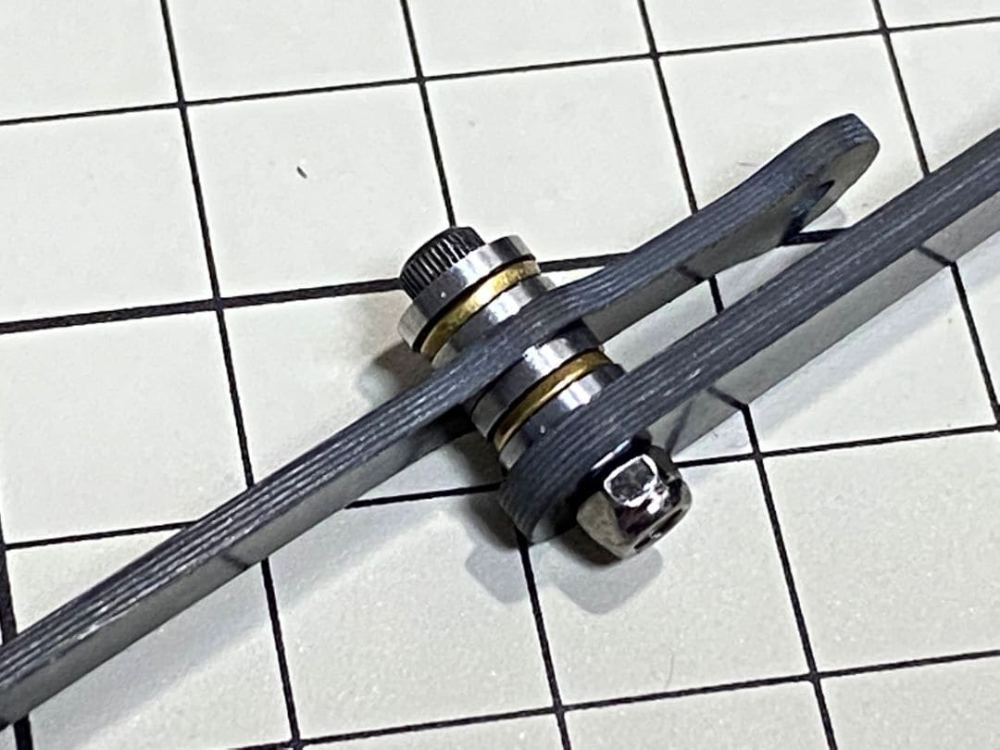
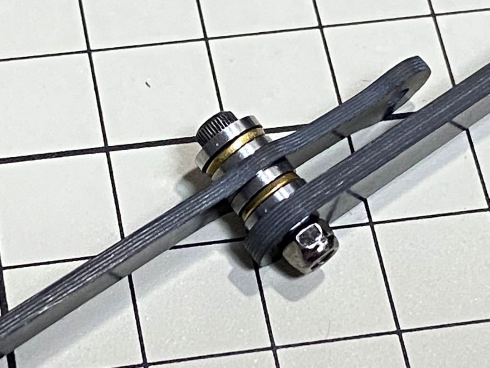
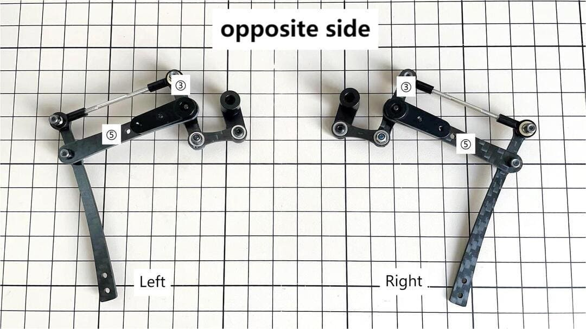
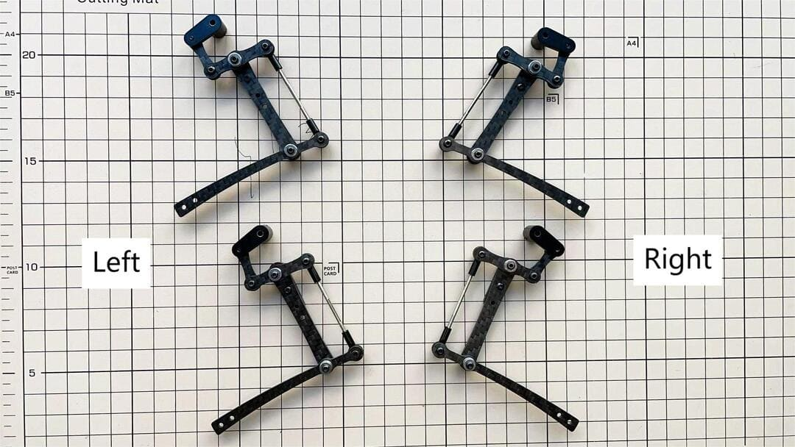
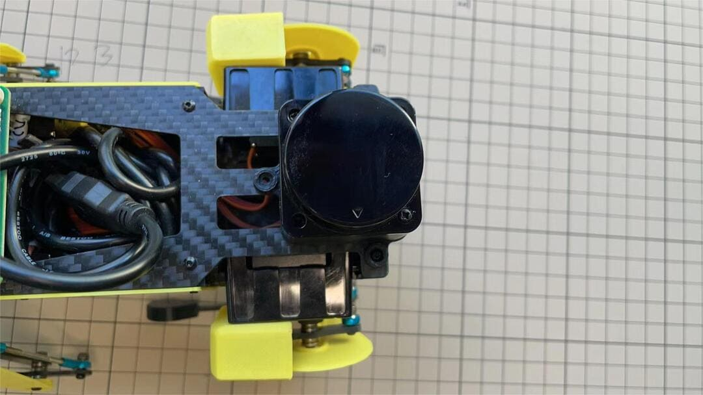
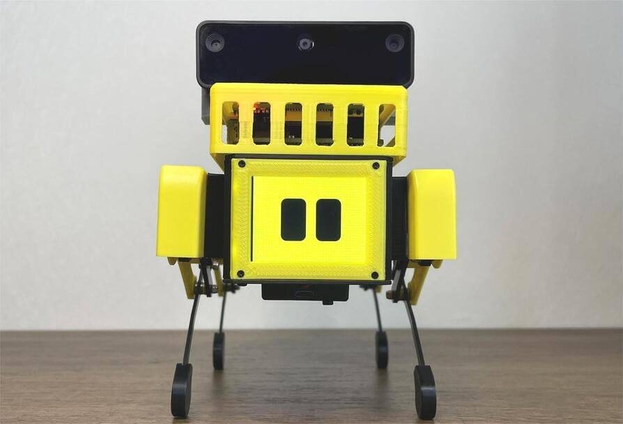
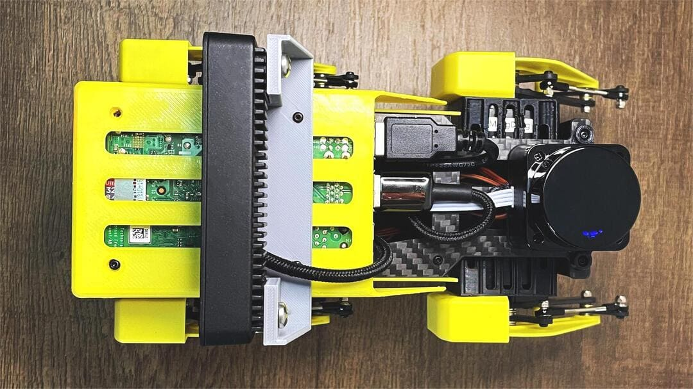
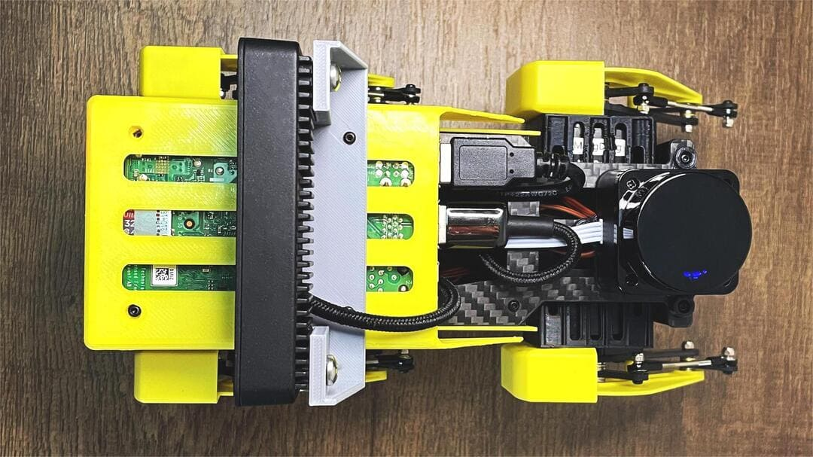
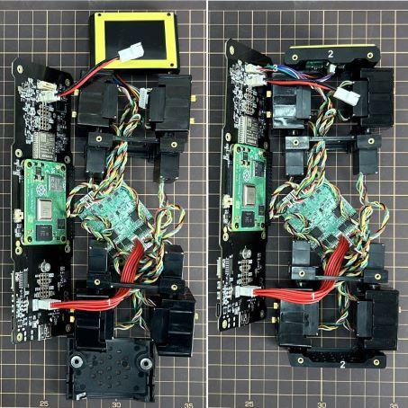

アセンブリ
Mini Pupperの組み立て
これは組み立て済みレッグキットのビデオクリップです。より詳細な手順については、以下のセクションを参照してください。
Mini Pupper Fusion 360 CADモデルhttps://a360.co/3wFLSlT もご参照ください。
0.2022年4月15日以降に変更点を更新
ボディとヒップのパーツを3Dプリントから金型に更新。
オリジナルの4つのヒップパーツを金型用に再設計し、1つに統合した。
2022年4月15日以降にMini Pupperのキットを入手された場合、組み立てはより簡単になります。
もしあなたが3Dプリンターを持っていて、以前の3Dプリンターで印刷したデザインを使いたいのであれば、それでも構いません。
1.ビルド済みのイメージをmicroSDに書き込む
ツール
キットに含まれる工具に加えて、組み立てには以下のものが必要です。
USBキーボード
USBマウス
PC
microSDカードリーダー
HDMIディスプレイ
マイクロHDMIケーブル
USB充電器
ステップ1.1 充電
バッテリーはUSB経由で充電される（USBソケットは写真を参照）。
LEDライト：緑は十分な電力があることを意味し、赤は充電が必要であることを意味します。
5V/2Aのアダプターを使用すると、バッテリーICが1Aに変更されます。80%充電でランプが緑色になるまで約1時間、100%充電までさらに約1時間かかりますが、ランプが緑色になれば使用可能です。
ステップ1.2イメージのダウンロード
最新の画像ファイルは以下のフォルダからダウンロードできます。
下の写真はカスタムキャリーボード。

"xxx_MiniPupper_Controller_Ubuntu_22.04.img "は、Ubuntu 22.04バージョンのイメージを意味します。
"xxx.MiniPupper_ROS&OpenCV_Ubuntu20.04.03.img "は、Ubuntu + ROS + OpenCVバージョンのSLAM & Navigation & AI用イメージファイルです。
ステップ1.3 microSDカードに画像を書き込む
microSDカードをPCのSDカードリーダーに挿入し、イメージを書き込みます。イメージ作成ツールのbalenaEtcherかWin32DiskImagerが簡単で確実なのでおすすめです。完了までに時間がかかります。
PCからSDカードを取り出し、Raspberry piに挿入します。

2.ネジの位置
写真はネジの位置を簡単に示している。

(上の写真は2022年4月15日以前のバージョン、下の写真は2022年4月15日以降のバージョン)


(上の写真は2022年4月15日以前のバージョン、下の写真は2022年4月15日以降のバージョン)


3.脚組み立て
以下のビデオクリップをご覧ください。
ツール
キットに含まれる工具に加えて、組み立てには以下のものが必要です。
ロックタイト
初心者の方にいきなりロックタイトを使用することはお勧めしません。
ロックタイトはナットの緩みを防止するが、緩みに気づいたときだけ締めればよいので、必須ではない。
使用ボルト
M2x5mm 2x4=8 ①+②，⑤+⑥
M2x8mm 3x4=12 ②+③④+⑦③+④
M2x12mm 1x4=4 ⑤+⑦ ⑤+7
M2x14mm 1x4=4 ③+⑤ ③+⑤ ③+⑤
ステップ3.1 シングルレッグ
本の脚を組み立てる。右側の前面と背面は同じで、左側の前面と背面も同じである。右側の組み立て方を説明する。
ビデオによる説明は、リンクhttps://youtu.be/Ut7UnS3CTZsをご参照ください。
各パーツには以下のように番号を振って説明している。

と②を組み立てる
ネジはM2×5mmを1本使用し、②の底面から上に向かって①のネジ穴に差し込んで締めます。の側面に注意してください。
のボールベアリング2個は、下の写真のように奥まで入れて、端が少し見えるようにします。ボールベアリングを叩き、隙間なく押し込む。
と③を組み立てる
M2×8mmのネジとM2のロックナットを使用する。ネジを③の下から上へ差し込み、②を貫通させてナットで締める。このとき③の向きに注意することが大切です。真ん中の穴の位置をよく見てください。


の長さの調整
の長さは必ず⑤の長さと合わせること。長さを調整する際は、長めのネジを2本使うと合わせやすい。長さの調整が終わったら、すべて分解する。
ねじりにくい場合は、ドライバーを2本使って補助するとよい。

と⑥を組み立てる。
M2×5mmのネジを1本使用する。まず⑤にビスを差し込み、⑥の穴に差し込んで締めます。このとき、⑥の大きな穴が表面側を向くようにしてください。
と⑦を組み立てる。
M2x12mmのネジ、M2のロックナット、2組のボールベアリングを使用する。それぞれのボールベアリングは3つの部品で構成されており、溝がある面を内側に向けた上部と下部がある。1組のボールベアリングにネジを挿入する。次にネジを⑦の穴に差し込む。このとき、⑦の反った面を見て、向きが合っているか確認する。もう一組のボールベアリングをねじ込みます。最後に⑤にネジを入れ、ナットで締めます。

 

と⑦を組み立てる
M2×8mmのネジとM2のナットを使う。ネジを⑦に差し込み、④を通し、ナットで締める。の表裏の向きはどちらでもよい。
左右の脚
と④を組み立てる
M2×8mmのネジとM2のナットを使う。ネジを③に差し込み、④を通し、ナットで締める。
左右の脚
と⑤を組み立てる
M2×14mmのネジとボールベアリングを2セット使用する。ベアリング、③、ベアリング、⑤の順にネジを通します。ネジは固定しませんが、次の工程でサーボを取り付けるときにネジを締めます。

右足の完成
これで右側に片足ができた。いろいろな角度から見てください。左足は右足と左右対称でなければなりません。

反対側
ステップ3.2 4脚
ステップ3.3 ロックタイト
ナットは可動継手にあるため、強く締めすぎるとすぐに緩む。ロックタイトで固定すべきである。ナットは強い力で緩めることができるので、後で分解することも可能である。

下の写真のように、接着剤で固定されているネジもある。
4.ヒップアッセンブリー
ステップ4.1ヒップ
以下のビデオクリップをご覧ください。
サーボケーブルは2種類あり、No.1,4,7,10は9cm、それ以外は15cm。
各サーボの位置は下図を参照してください。
右腰後部の組み立て方を示す。
サーボシャフトが正しい位置にあるか確認する。 出力軸に中間位置の目印を付け、左の写真のように故障で出力軸が中間位置にある。組立中に中段の写真のように軸の位置が変わることがありますので、その場合はサーボホーンで出力軸を正しい位置に移動させ、最後に右の写真のようにサーボホーンをその位置に合わせます。

サーボとヒップパーツを接続する。


ヒップパーツに2つのサーボを入れる
箱にサーボを2個入れ、M2x6mmのネジで固定する。

4つのヒップパーツは、サーボの位置を参照してください。

脚とヒップを組み立てる
技術的な知識がない場合は、キャリブレーションの段階で脚を股関節に取り付けると簡単です。
初めて4脚ロボットを組み立てる場合、ロックタイトの使用はお勧めしません。
M2x12mmのネジを使って脚を腰に取り付けます。脚はマニュアルにあるように約45°傾けます。

ネジをロックタイトで締める。爪楊枝を使ってサーボのネジ穴にロックタイトを塗る。


ステップ4.2フォーヒップス

サーボギア出力軸の位置にご注意ください。
5.ボディフレームアセンブリ
ステップ5.1 センターパーツ
各サーボの位置は以下のようになっている。
サーボケーブルの長さは、No.1,4,7,10 が 9cm、No.1,4,7,10 が 15cm です。
この作業では、ケーブルにマスキングテープを貼り、サーボの数を書いておくと後で楽だ。

ステップ5.2 フロント・パーツ
*フロント部分は液晶画面を固定するためのものです。背面と間違えないように注意。

ステップ5.3 リア側
フロント部分と同じ手順。

ステップ5.4バッテリー
バッテリーをDIYする場合は、最初に私たちのバッテリーの仕様を確認してください、特に電圧は7.4V未満でなければなりません、また、他のバッカーの仕事を参照することができますhttps://www.facebook.com/groups/716473723088464/posts/777616293640873/
バッテリーパックを取り付ける。

カーボンファイバーのフロントとリアの向きに注意。
バッテリーを後方にスライドさせ、固定します。ケーブルを底板の穴に通し、上まで持ってくる。
ステップ5.5 底板
プレートの向きは、穴が正面に来るようにしなければならない。
脚が動かない場合は、①の部分を回してください。

ステップ5.6faceの表示とフレーム
ディスプレイの保護シートを剥がす。ディスプレイの端にある細いフレキシブルケーブルを折りたたむ。基板とディスプレイを本体に取り付けます。ディスプレイを取り付ける際は、棒などでフレキシブルケーブルを軽く押し、できるだけ奥に入るようにするとよい。


黄色い部分には表と裏があるので注意。


ステップ5.7 カスタム基板
ディスプレイケーブルをカスタム回路基板に差し込む。


12本のサーボケーブルを差し込む。写真ではJ1,J2,J3.....J12.

4本のM2x5mmネジと4本の短い支柱を使用する。


カーボンファイバー・ボードの上に置く
バッテリーケーブルを差し込む。このコネクターは腰の部分と干渉する可能性があるので、基板の真ん中にある穴からスライドさせる必要がある。
M2x5mmのネジを8本使用する。プレートの向きは、大きな開口部が正面に来るようにする。

カスタム回路基板をボディに近づける。基板が浮いてしまうかもしれないが、4本の長い支柱を使って固定することができる。

1 号サーボのケーブルに無理がかからないように注意してください。
ステップ5.8
ファンを取り付ける。

Step 5.9 Raspberry Pi4


6.カバーアセンブリ
以下のビデオクリップをご覧ください。
ステップ6.1 サイドパネル

ステップ6.2 シンガード
M2x10mmの皿ネジを4本使用する。


ステップ6.3肩
まずネジだけを差し込み、次にショルダー部を隙間に差し込みます。ショルダー部の穴に2mmの六角ドライバーを差し込み、ネジを締めます。


ステップ6.4 トップカバー
M2x10mmのネジを4本使用する。3Dプリンターで作ったパーツなので、穴が小さくてネジが入らない場合は、付属の2mm六角ドライバーで回して穴を大きくすることができる。


ステップ6.5靴
4つのシューズを履く。


ステップ6.6 完成！
7.アドオンアッセンブリー
ステップ7.1ライダー
ライダーをご注文の場合、ライダーホルダーは一緒に発送されます。
ステップ7.2カメラ
カメラをご注文の場合、カメラホルダーはキットに含まれていませんが、下のstlファイルから3Dプリントすることができます。
https://drive.google.com/drive/folders/1lRADDbAt7mSBJE4j8HCji1WbWcpneUED


ステップ7.3 完成！
 

Mini Pupperの組み立て2
これはキット一式のビデオクリップです。詳細な手順については、以下のセクションを参照してください。
Mini Pupper2 Fusion 360 CADモデルhttps://a360.co/485n8mP もご参照ください。
1.ビルド済みのイメージをmicroSDに書き込む
ツール
キットに含まれる工具に加えて、組み立てには以下のものが必要です。
USBキーボード
USBマウス
PC
microSDカードリーダー
HDMIディスプレイ
マイクロHDMIケーブル
USB充電器
ステップ1.1 充電
バッテリーはUSB経由で充電される（USBソケットは写真を参照）。
LEDライト：緑は十分な電力があることを意味し、赤は充電が必要であることを意味します。
5V/2Aのアダプターを使用すると、バッテリーICが1Aに変更されます。80%充電でランプが緑色になるまで約1時間、100%充電までさらに約1時間かかりますが、ランプが緑色になれば使用可能です。
ステップ1.2画像のダウンロード
ビルド済みイメージファイルはMini Pupperビルド済みイメージからダウンロードできます。
"xxx_stanford**.img "はUbuntu 22.04用のイメージです。
下の写真はカスタム・キャリーボード。

ステップ1.3 microSDカードに画像を書き込む
microSDカードをPCのSDカードリーダーに挿入し、イメージを書き込みます。イメージ作成ツールのbalenaEtcherかWin32DiskImagerが簡単で確実なのでおすすめです。完了までに時間がかかる場合があります。
2.ネジの位置
写真はネジの位置を簡単に示している。


3.脚組み立て
以下のビデオクリップをご覧ください。
使用ボルト
M2x5mm 2x4=8 ①+②，⑤+⑥
M2x8mm 3x4=12 ②+③④+⑦③+④
M2x12mm 1x4=4 ⑤+⑦ ⑤+7
M2x14mm 1x4=4 ③+⑤ ③+⑤ ③+⑤
ステップ3.1 シングルレッグ
本の脚を組み立てる。右側の前面と背面は同じで、左側の前面と背面も同じである。右側の組み立て方を説明する。
ビデオによる説明は、リンクhttps://youtu.be/Ut7UnS3CTZsをご参照ください。
各パーツには以下のように番号を振って説明している。
と②を組み立てる

の中のベアリングの両側は異なっている。

と③を組み立てる
M2×8mmのネジとM2のロックナットを使用する。ネジを③の下から上へ差し込み、②を貫通させてナットで締める。このとき③の向きに注意する。真ん中の穴の位置をよく見てください。

の長さの調整
の長さは必ず⑤の長さと合わせること。長さを調整する際は、長めのネジを2本使うと合わせやすい。長さの調整が終わったら、すべて分解する。
ねじりにくい場合は、ドライバーを2本使って補助するとよい。
と⑥を組み立てる。
M2×5mmのネジを1本使用する。まず⑤にビスを差し込み、⑥の穴に差し込んで締めます。このとき、⑥の大きな穴が表面側を向くようにしてください。
と⑦を組み立てる。
M2x12mmのネジ、M2のロックナット、2組のボールベアリングを使用する。それぞれのボールベアリングは3つの部品で構成されており、溝がある面を内側に向けた上部と下部がある。1組のボールベアリングにネジを挿入する。次にネジを⑦の穴に差し込む。このとき、⑦の反った面を見て、向きが合っているか確認する。もう一組のボールベアリングをねじ込みます。最後に⑤にネジを入れ、ナットで締めます。
と⑦を組み立てる
M2×8mmのネジとM2のナットを使う。ネジを⑦に差し込み、④を通し、ナットで締める。の表裏の向きはどちらでもよい。
左右の脚
と④を組み立てる
M2×8mmのネジとM2のナットを使う。ネジを③に差し込み、④を通し、ナットで締める。
左右の脚

と⑤を組み立てる
M2×14mmのネジとボールベアリングを2セット使用する。ベアリング、③、ベアリング、⑤の順にネジを通します。ネジは固定しませんが、次の工程でサーボを取り付けるときにネジを締めます。
右足の完成
これで右側に片足ができた。いろいろな角度から見てください。左足は右足と左右対称になるようにします。
反対側
ステップ3.2 4脚

ステップ3.3 ロックタイト
Mini Pupperをしばらく走らせると、ネジやナットが緩んできます。どのように動作するのかを理解するのに役立ちます。
初心者の方にいきなりロックタイトを使用することはお勧めしません。
ロックタイトはナットの緩みを防止するが、緩みに気づいたときだけ締めればよいので、必須ではない。
下の写真のように、接着剤で固定されているネジもある。
4.顔の表示とフレーム
ディスプレイの保護シートを剥がす。ディスプレイの端にある細いフレキシブルケーブルを折りたたむ。基板とディスプレイを本体に取り付ける。


ディスプレイを取り付ける際、棒を使ってフレキシブルFPCケーブルを軽く押し、できるだけ奥に入るようにします。このFPCケーブルは180度曲げないでください。
5.ボディ・フレームとヒップ・アセンブリ
サーボIDの設定方法は、一番上の動画を参照してください。
各サーボの位置は下図を参照してください。

ステップ5.1 ボディセンターパーツ
1、4、7、10番サーボをボディセンターパーツに接続する。
この作業では、ケーブルにマスキングテープを貼り、サーボの数を書いておくと後で楽だ。

センターパートの方向に注意。
センターパーツをボトムカーボンファイバーに接続する。
カーボンファイバーのフロントとリアの向きに注意。

ステップ5.2 ヒップ・パーツ
サーボの位置を参考に、4つのヒップパーツを組み立てる。


No.1、4、7、10サーボが正しい位置にあることを確認する。

カスタムケーブルを使ってバッテリーをトップPCBボードに接続し、バッテリーボタンを3秒以上クリックして起動させる。

サーボコネクタの向きに注意して、サーボをトップPCBボードに接続する。

股関節の4つのパーツを体につなげる、注意してください。
今はバッテリーの電源を切らないでください。
すべてのサーボの位置が正しいことを確認する。

ステップ5.3 前身頃と後身頃
バッテリーの電源を切り、フロントとバックのボディパーツを接続する。


指示に注意してください。

バッテリーに電源を入れ、腰のパーツが正しい位置にあることを確認し、残りのサーボをすべてPCBボードに接続したら、バッテリーの電源を切って先に進む。

LCDケーブルをPCBボードに接続し、サーボケーブルを明確にする。

天板と底板を固定する。

ステップ5.4 4本の脚を本体に組み付ける
理論的にベストな角度に注意してください。 理論的にベストな角度はできるだけ満たした方がいいです。 でも、後でソフトウェアを使って角度を調整するので心配しないでください。

ステップ5.5 バッテリーを本体に組み付ける

バッテリーを後方にスライドさせ、固定します。

ステップ5.6 スピーカーの組み立て


6.カバーアセンブリ
以下のビデオクリップをご覧ください。
ステップ6.1 サイドパネル

ステップ6.2 シンガード
M2x10mmの皿ネジを4本使用する。

ステップ6.3肩
まずネジだけを差し込み、次にショルダー部を隙間に差し込みます。ショルダー部の穴に2mmの六角ドライバーを差し込み、ネジを締めます。

ステップ6.4靴
4つのシューズを履く。
コンプリート！
7.アドオンアセンブリ
ステップ7.1ライダー
ライダーをご注文の場合、3Dプリントされたライダーホルダーとカスタムケーブルが一緒に発送されます。Mini Pupper2のSTLファイルを使用して、ご自身でホルダーをプリントすることもできます。
3Dプリントしたパーツに3つのホルダーを接続する。

カスタムケーブルをPCBボード上のLidarコネクタに接続する。

3Dプリントした部品をPCBボードに固定する。
カスタムケーブルをライダーモジュールに接続し、セルフタッピングネジで固定する。
ステップ7.2カメラ
Mini Pupper 2はシングルPiカメラまたはOpenCV OAK-D-Liteカメラモジュールもサポートしています。Mini Pupper2のSTLファイルを使用して、自分でホルダーを印刷することもできます。


Mini Pupper2を組み立てる
一般的なDIYプロセス
アセンブル→キャリブレーション→ラン
注意
MCU（ESP32とAT32）ソフトウェアは両方ともプリインストールされているので、MCUイメージをフラッシュする必要はありません。
サーボ番号はハードウェアの設計により固定されているため、Mini Pupper 2のように各サーボ番号を設定する必要はありません。
Mini Pupper2 Fusion 360 CADモデルをご参照ください： https://a360.co/485n8mP
1.ビルド済みのイメージをmicroSDに書き込む
ツール
キットに含まれる工具に加えて、組み立てには以下のものが必要です。
USBキーボード
USBマウス
PC
microSDカードリーダー
HDMIディスプレイ
マイクロHDMIケーブル
USB充電器
ステップ1.1 充電
バッテリーはUSB経由で充電される（USBソケットは写真を参照）。
LEDライト：緑は十分な電力があることを意味し、赤は充電が必要であることを意味します。
5V/2Aのアダプターを使用すると、バッテリーICが1Aに変更されます。80%充電でランプが緑色になるまで約1時間、100%充電までさらに約1時間かかりますが、ランプが緑色になれば使用可能です。
ステップ1.2画像のダウンロード
ビルド済みイメージファイルはMini Pupperビルド済みイメージからダウンロードできます。
"v2Pro_stanford**.img "はUbuntu 22.04用のイメージです。
下の写真はカスタム・キャリーボード。
ステップ1.3 microSDカードに画像を書き込む
microSDカードをPCのSDカードリーダーに挿入し、イメージを書き込みます。イメージ作成ツールのbalenaEtcherかWin32DiskImagerが簡単で確実なのでおすすめです。完了までに時間がかかる場合があります。
2.ネジの位置
写真はネジの位置を簡単に示している。
3.脚組み立て
以下のビデオクリップをご覧ください。
使用ボルト
M2x5mm 2x4=8 ①+②，⑤+⑥
M2x8mm 3x4=12 ②+③④+⑦③+④
M2x12mm 1x4=4 ⑤+⑦ ⑤+7
M2x14mm 1x4=4 ③+⑤ ③+⑤ ③+⑤
ステップ3.1 シングルレッグ
本の脚を組み立てる。右側の前面と背面は同じで、左側の前面と背面も同じである。右側の組み立て方を説明する。
ビデオによる説明は、リンクhttps://youtu.be/Ut7UnS3CTZsをご参照ください。
各パーツには以下のように番号を振って説明している。
と②を組み立てる
の中のベアリングの両側は異なっている。
と③を組み立てる
M2×8mmのネジとM2のロックナットを使用する。ネジを③の下から上へ差し込み、②を貫通させてナットで締める。このとき③の向きに注意することが大切です。真ん中の穴の位置をよく見てください。
の長さの調整
の長さは必ず⑤の長さと合わせること。長さを調整する際は、長めのネジを2本使うと合わせやすい。長さの調整が終わったら、すべて分解する。
ねじりにくい場合は、ドライバーを2本使って補助するとよい。
と⑥を組み立てる。
M2×5mmのネジを1本使用する。まず⑤にビスを差し込み、⑥の穴に差し込んで締めます。このとき、⑥の大きな穴が表面側を向くようにしてください。
と⑦を組み立てる。
M2x12mmのネジ、M2のロックナット、2組のボールベアリングを使用する。それぞれのボールベアリングは3つの部品で構成されており、溝がある面を内側に向けた上部と下部がある。1組のボールベアリングにネジを挿入する。次にネジを⑦の穴に差し込む。このとき、⑦の反った面を見て、向きが合っているか確認する。もう一組のボールベアリングをねじ込みます。最後に⑤にネジを入れ、ナットで締めます。
と⑦を組み立てる
M2×8mmのネジとM2のナットを使う。ネジを⑦に差し込み、④を通し、ナットで締める。の表裏の向きはどちらでもよい。
左右の脚
と④を組み立てる
M2×8mmのネジとM2のナットを使う。ネジを③に差し込み、④を通し、ナットで締める。
左右の脚
と⑤を組み立てる
M2×14mmのネジとボールベアリングを2セット使用する。ベアリング、③、ベアリング、⑤の順にネジを通します。ネジは固定しませんが、次の工程でサーボを取り付けるときにネジを締めます。
右足の完成
これで右側に片足ができた。いろいろな角度から見てください。左足は右足と左右対称でなければなりません。
反対側
ステップ3.2 4脚
ステップ3.3 ロックタイト
Mini Pupperをしばらく走らせると、ネジやナットが緩んでくるので、必要に応じて締め直してください。どのように動作するのかを理解するのに役立ちます。
初心者の方にいきなりロックタイトを使用することはお勧めしません。
ロックタイトはナットの緩みを防止するが、緩みに気づいたときだけ締めればよいので、必須ではない。
下の写真のように、接着剤で固定されているネジもある。
4.顔の表示とフレーム
ディスプレイの保護シートを剥がす。ディスプレイの端にある細いフレキシブルケーブルを折りたたむ。基板とディスプレイを本体に取り付ける。
ディスプレイを取り付ける際、棒を使ってフレキシブルFPCケーブルを軽く押し、できるだけ奥に入るようにします。このFPCケーブルは180度曲げないでください。
5.ボディ・フレームとヒップ・アセンブリ
CM4モジュールをキャリーボードに接続する前に、サーマルパッドの保護フィルムを剥がしてください。

v2ProバージョンではサーボIDを設定する必要はありません。サーボIDはハードウェア設計により固定されています。
各サーボの位置は下図を参照してください。
ステップ5.1 ボディセンターパーツ
1、4、7、10番サーボをボディセンターパーツに接続する。
この作業では、ケーブルにマスキングテープを貼り、サーボの数を書いておくと後で楽だ。
センターパートの方向に注意。
ステップ5.2 ヒップ・パーツ
サーボの位置を参考に、4つのヒップパーツを組み立てる。
No.1、4、7、10サーボをサーボMCU基板に接続する。

残りのサーボをサーボ MCU PCB 基板に接続する。
サーボケーブルコネクターの指示に注意する。
DIY ケーブルを使用して、トップ PCB ボードとサーボ MCU PCB ボードを接続します。

バッテリーの電源を入れ、トップPCBボードに接続する。
4つの黒いヒップパーツを、相対するサーボ（No.1,4,7,10）に接続します。

股関節の4つのパーツを体につなげる、注意してください。
今はバッテリーの電源を切らないでください。
すべてのサーボの位置が正しいことを確認する。
ステップ5.3 前身頃と後身頃
バッテリーの電源を切り、赤いケーブルの位置を調整し、フロントとバックのボディパーツを接続する。
ネジを使ってトップPCBボードを固定する。
サーボMCU PCBボードをテープで締め付けることができる。
バッテリーに電源を入れ、トップPCBボードに接続し、4つの黒いヒップパーツの位置が正しいことを確認する。
センターパーツをボトムカーボンファイバーに接続する。

カーボンファイバーのフロントとリアの向きに注意。
ステップ5.4 4本の脚を本体に組み付ける
組み立て済みの脚4本を準備する

理論的にベストな角度に注意を払い、できるだけ理論的にベストな角度に合わせる方がいい。
でも、後でソフトウェアを使って角度を調整するから心配しないで。


ステップ5.5 バッテリーを本体に組み付ける
バッテリーを後方にスライドさせ、固定します。
ステップ5.6 スピーカーの組み立て
6.カバーアセンブリ
以下のビデオクリップをご覧ください。
ステップ6.1 サイドパネル
ステップ6.2 シンガード
M2x10mmの皿ネジを4本使用する。
ステップ6.3肩
まずネジだけを差し込み、次にショルダー部を隙間に差し込みます。ショルダー部の穴に2mmの六角ドライバーを差し込み、ネジを締めます。
ステップ6.4靴
4つのシューズを履く。
コンプリート！
7.アドオンアセンブリ
ステップ7.1ライダー
ライダーをご注文の場合、3Dプリントされたライダーホルダーとカスタムケーブルが一緒に発送されます。Mini Pupper2のSTLファイルを使用して、ご自身でホルダーをプリントすることもできます。
3Dプリントしたパーツに3つのホルダーを接続する。
カスタムケーブルをPCBボード上のLidarコネクタに接続する。
3Dプリントした部品をPCBボードに固定する。
カスタムケーブルをライダーモジュールに接続し、セルフタッピングネジで固定する。
ステップ7.2カメラ
Mini Pupper 2はシングルPiカメラまたはOpenCV OAK-D-Liteカメラモジュールもサポートしています。Mini Pupper2のSTLファイルを使用して、自分でホルダーを印刷することもできます。